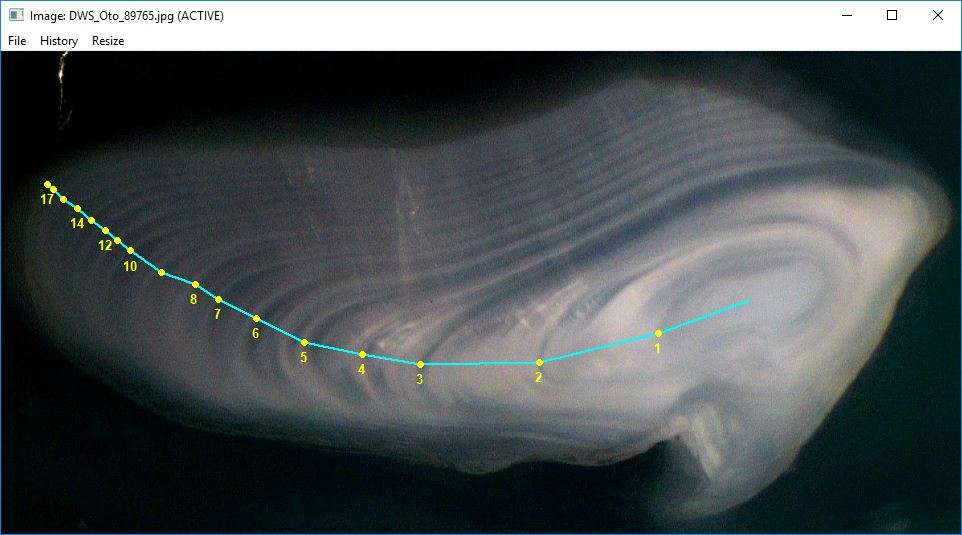

Other Features / Common Questions
Derek H. Ogle
2019-12-11
Other.RmdCollect Just Age Data
Some researchers would like to use RFishBC to collect age data only without any concern for measurements on the image for the purposes of back-calculation. RFishBC will record measurements on the structure but these measurements can ultimately be ignored if you simply want to have a data.frame of estimated ages. This is demonstrated below using a few functions from the dplyr package.
This example also uses the “DHO” readings of “Scale_1.jpg”, “Scale_2.jpg”, and “Scale_3.jpg” demonstrated in the Combine Data from Multiple Structures section of the Collecting Radial Measurements vignette. These readings are put into a list using listFiles() and their data are combined into a WIDE format data.frame below (as described in the Collecting Radial Measurements vignette).
( fns <- listFiles("rds",other=c("Scale","DHO")) )
#> [1] "Scale_1_DHO.rds" "Scale_2_DHO.rds" "Scale_3_DHO.rds"
( dfrad2 <- combineData(fns,formatOut="wide") )
#> id reading agecap radcap rad1 rad2 rad3 rad4 rad5
#> 1 1 DHO 5 0.5163737 0.2208691 0.2893299 0.3259383 0.4626601 0.5017862
#> 2 2 DHO 4 0.3908662 0.1377625 0.2236611 0.3026716 0.3530492 NA
#> 3 3 DHO 1 0.5202232 0.5202232 NA NA NA NAA data.frame of just ages is created from this data.frame by removing all variables that contain the word “rad” using select() from dplyr. The select() function requires the original data.frame as its first argument and then directions on variables to select as the ensuing arguments. There are several ways to get the required data.frame with these simple data as shown below – one can select variables individually, select contiguous variables, or deselect (negative sign) variables that contain the word “rad”.
( dfrad2ages <- select(dfrad2,id,reading,agecap) )
#> id reading agecap
#> 1 1 DHO 5
#> 2 2 DHO 4
#> 3 3 DHO 1
( dfrad2ages <- select(dfrad2,id:agecap) )
#> id reading agecap
#> 1 1 DHO 5
#> 2 2 DHO 4
#> 3 3 DHO 1
( dfrad2ages <- select(dfrad2,-contains("rad")) )
#> id reading agecap
#> 1 1 DHO 5
#> 2 2 DHO 4
#> 3 3 DHO 1The agecap variable can be renamed with rename() from dplyr.
( dfrad2ages <- rename(dfrad2ages,age=agecap) )
#> id reading age
#> 1 1 DHO 5
#> 2 2 DHO 4
#> 3 3 DHO 1
Curved Growth Trajectories
Some structures, especially otoliths, often have “growth trajectories” on which the user wants to mark annuli that are nonlinear. In these instances, the use of a linear transect is inappropriate. RFishBC can handle such circumstances by using makeTransect=FALSE in digitizeRadii(). When using makeTransect=FALSE the user will not select a transect as shown in the Collecting Radial Measurements vignette. The user will instead be prompted to successively mark the structure center, annuli, and structure margin.
digitizeRadii("DWS_Oto_89765.jpg",id=89765,reading="DHO",edgeIsAnnulus=TRUE,
makeTransect=FALSE,windowSize=10)The results can be seen with showDigitizedImage() as described in the Visualize Radial Data vignette.

RFishBC calculates radii as the cumulative sum of the annular increments rather than the distance from the structure center to the annuli. These radii or increments can be extracted as described in the Collecting Radial Measurements vignette.
combineData("DWS_Oto_89765_DHO.rds",formatOut="wide")
#> id reading agecap radcap rad1 rad2 rad3 rad4
#> 1 89765 DHO 19 1.52889 0.1609664 0.4130613 0.6681783 0.7902489
#> rad5 rad6 rad7 rad8 rad9 rad10 rad11 rad12
#> 1 0.9018444 0.9340365 1.014203 1.099765 1.159114 1.229457 1.258141 1.298337
#> rad13 rad14 rad15 rad16 rad17 rad18 rad19
#> 1 1.344228 1.372911 1.411179 1.442248 1.477615 1.511827 1.52889
combineData("DWS_Oto_89765_DHO.rds",formatOut="wide",typeOut="inc")
#> id reading agecap radcap inc1 inc2 inc3 inc4 inc5
#> 1 89765 DHO 19 1.52889 0.1609664 0.2520949 0.255117 0.1220706 0.1115955
#> inc6 inc7 inc8 inc9 inc10 inc11 inc12
#> 1 0.03219214 0.08016677 0.08556216 0.05934844 0.07034342 0.02868355 0.04019624
#> inc13 inc14 inc15 inc16 inc17 inc18 inc19
#> 1 0.04589046 0.02868355 0.03826742 0.0310698 0.03536676 0.03421178 0.01706312
Extract Increments Rather than Radii
As noted in the Introduction to Back-calculation vignette, radial measurements are the distance from the structure center to the annulus.1 In some instances, the user may desire incremental rather than radial measurements. Incremental measurements are the distances between successive annuli, with the first increment being the distance from the structure center to the first annulus. Increments may be extracted from the data stored in the R data file with combineData() using typeOut="inc". For example, the radial and incremental measurements for the “DHO” reading of “Scale_1.jpg” in wide format are shown below.
combineData("Scale_1_DHO.rds",formatOut="wide")
#> id reading agecap radcap rad1 rad2 rad3 rad4 rad5
#> 1 1 DHO 5 0.5163737 0.2208691 0.2893299 0.3259383 0.4626601 0.5017862
combineData("Scale_1_DHO.rds",typeOut="inc",formatOut="wide")
#> id reading agecap radcap inc1 inc2 inc3 inc4
#> 1 1 DHO 5 0.5163737 0.2208691 0.06846078 0.03660836 0.1367218
#> inc5
#> 1 0.03912615Of course, increments from several sets of measurements may also be extracted (note that the list of R data files in fns was created above)
combineData(fns,formatOut="wide")
#> id reading agecap radcap rad1 rad2 rad3 rad4 rad5
#> 1 1 DHO 5 0.5163737 0.2208691 0.2893299 0.3259383 0.4626601 0.5017862
#> 2 2 DHO 4 0.3908662 0.1377625 0.2236611 0.3026716 0.3530492 NA
#> 3 3 DHO 1 0.5202232 0.5202232 NA NA NA NA
combineData(fns,typeOut="inc",formatOut="wide")
#> id reading agecap radcap inc1 inc2 inc3 inc4
#> 1 1 DHO 5 0.5163737 0.2208691 0.06846078 0.03660836 0.13672182
#> 2 2 DHO 4 0.3908662 0.1377625 0.08589861 0.07901049 0.05037762
#> 3 3 DHO 1 0.5202232 0.5202232 NA NA NA
#> inc5
#> 1 0.03912615
#> 2 NA
#> 3 NA
Using “Flagging” Notes
A user may want to include a “flagging note” for a particular reading in the corresponding R Data file. These notes may be used, for example, to indicate that the reading was particularly difficult, needs to be reviewed, or needs to be re-read. As of version 0.2.1, notes may be added to the note object in the R Data files in two ways.
First, a note may be added to an already saved R Data file with addNote(). If no arguments are included in this function then the user will be prompted to choose the existing R Data file and then to enter the note. If the R Data file previously had a note then that note will be over-written with the new note. The user may also supply the name of the R Data file as the first argument and the note as the second argument to addNote(). For example, the following code would add a simple note to the “Scale_1_DHO.rds” file.
Second, a note may be added before the R Data file is written by including addNote=TRUE to digitizeRadii(). The note may be provided before processing the image by including the note in note= in digitizeRadii(). However, the user is more likely to not have a note about the reading of the image until after the image has been read. If no note is given in note= (the default behavior) then the user will be prompted to enter a note after the image has been read but before the R Data file is written. This option may be set for the session with RFBCoptions() (as demonstrated in the Collecting Radial Measurements vignette). For example, the following code would result in the dialog box shown below.
RFBCoptions(reading="DHO",edgeIsAnnulus=FALSE,windowSize=10,addNote=TRUE)
digitizeRadii("Scale_1.jpg",id="1")
The notes for a list of R Data file names may be found with findNotes(). The first argument to this function can be a vector of R Data file names in the current working directory. If this argument is missing, then the user will be prompted to choose R Data files from a dialog box. For example, the following code returns the list of notes for all fish ids and readings in the current working directory (note that the second file listed is not a valid file, so it was excluded from the vector given to findNotes()).
( tmp <- listFiles(".rds") )
#> [1] "DWS_Oto_89765_DHO.rds" "Oto140306_DHO.rds" "Oto140306_OHD.rds"
#> [4] "Scale_1_DHO.rds" "Scale_1_ODH.rds" "Scale_1_OHD.rds"
#> [7] "Scale_2_DHO.rds" "Scale_2_OLDwNoNote.rds" "Scale_3_DHO.rds"
findNotes(tmp[-2])
#> id reading note
#> 1 89765 DHO
#> 2 140306 OHD
#> 3 1 DHO 3rd annulus location was difficult
#> 4 1 ODH Test note as argument
#> 5 1 OHD Test not as dialog box
#> 6 2 DHO
#> 7 2 DHO
#> 8 3 DHOThe results from findNotes() is a vector that can be manipulated. For example, the following shows the list for only those ids and readings for which a note was made.
notes <- findNotes(tmp[-2])
dplyr::filter(notes,note!="")
#> id reading note
#> 1 1 DHO 3rd annulus location was difficult
#> 2 1 ODH Test note as argument
#> 3 1 OHD Test not as dialog boxAdditionally, one can append the notes to the radial (or incremental) measurements returned from combineData() (e.g., as shown above) using left_join() from dplyr as shown below.
( fns <- listFiles("rds",other=c("Scale","DHO")) )
#> [1] "Scale_1_DHO.rds" "Scale_2_DHO.rds" "Scale_3_DHO.rds"
( dfrad2 <- combineData(fns,formatOut="wide") )
#> id reading agecap radcap rad1 rad2 rad3 rad4 rad5
#> 1 1 DHO 5 0.5163737 0.2208691 0.2893299 0.3259383 0.4626601 0.5017862
#> 2 2 DHO 4 0.3908662 0.1377625 0.2236611 0.3026716 0.3530492 NA
#> 3 3 DHO 1 0.5202232 0.5202232 NA NA NA NA
dplyr::left_join(dfrad2,notes,by=c("id","reading"))
#> id reading agecap radcap rad1 rad2 rad3 rad4 rad5
#> 1 1 DHO 5 0.5163737 0.2208691 0.2893299 0.3259383 0.4626601 0.5017862
#> 2 2 DHO 4 0.3908662 0.1377625 0.2236611 0.3026716 0.3530492 NA
#> 3 2 DHO 4 0.3908662 0.1377625 0.2236611 0.3026716 0.3530492 NA
#> 4 3 DHO 1 0.5202232 0.5202232 NA NA NA NA
#> note
#> 1 3rd annulus location was difficult
#> 2
#> 3
#> 4
Note that with curved growth trajectories, radial measurements are the cumulative sum of the distances between annuli with the first distance being from the structure center to the first annulus.↩